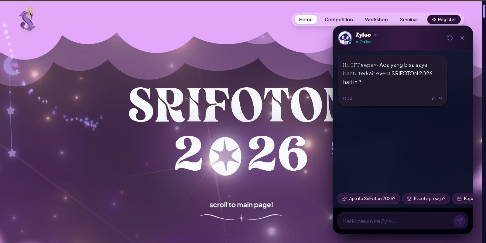
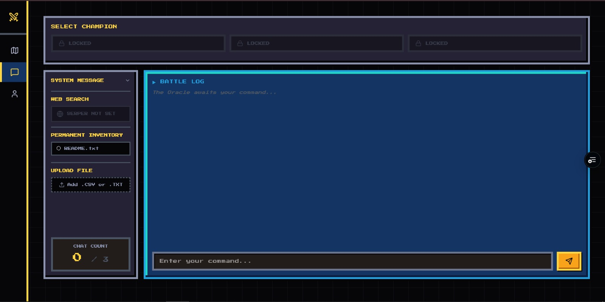
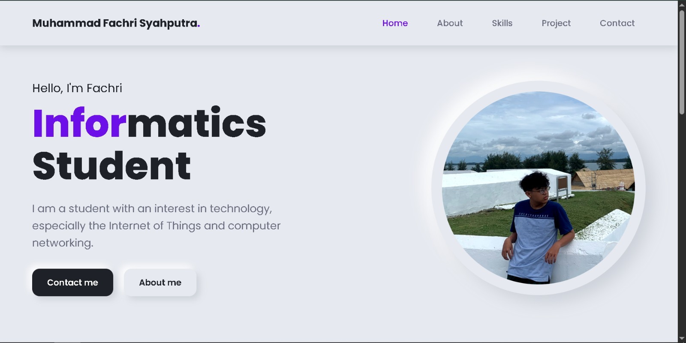

Projects.

Srifoton 2026
A website for the annual information technology event organized by the Sriwijaya University Informatics Student Association.

BWAI GDGoC 2026
A chatbot built during the Build With AI 2026 workshop by GDGoc. It was a hands on session to learn how AI can be used to create a simple conversational application.

Personal Portofolio Website
A multi-page personal portfolio built with HTML and CSS as a Web Programming course assignment, to practice styling with CSS selectors.